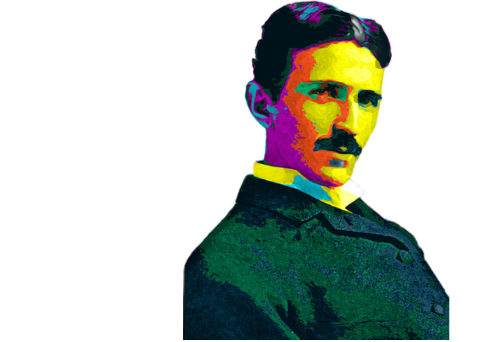
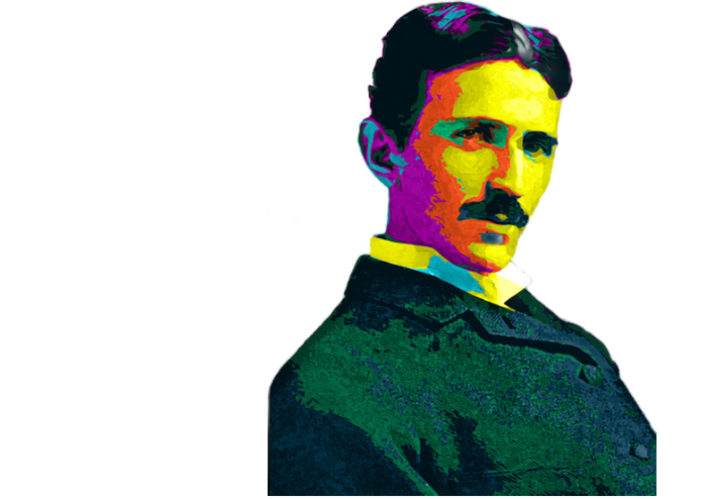
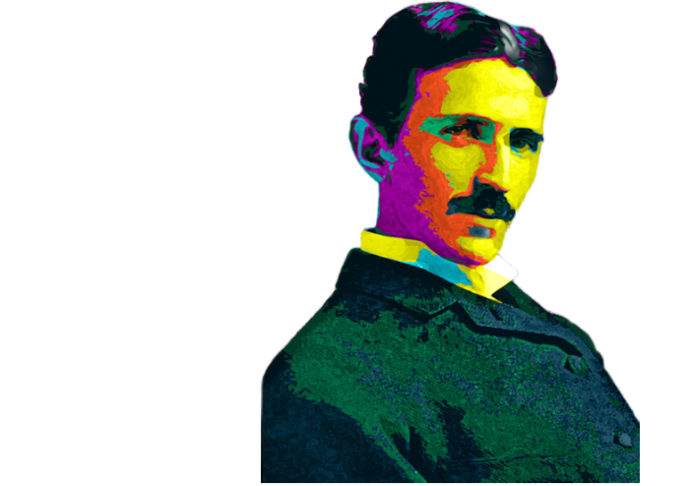
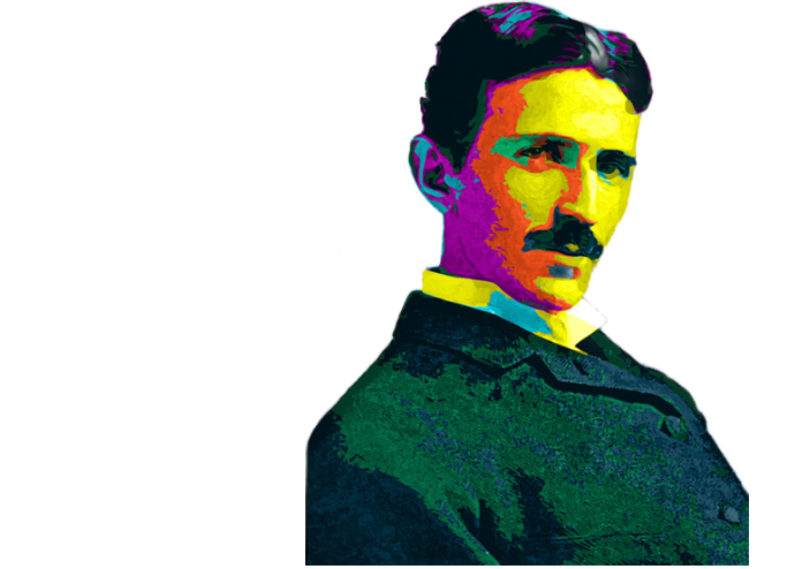

 About

About
About

About
Nikola Tesla was born in 1856 in what is now Croatia to Serbian parents Milutin and Djuka Tesla.
His father was a priest, an intellectual who prodded his son to develop unusual mental discipline. His mother was an inventor of many time-saving devices used for domestic tasks.
Only after Tesla sank into an acute physical decline did his father relent and allow him to continue his scientific education at Graz Polytechnic Institute in Austria.
While still a student, Tesla began to think about the possibilities of alternating current (AC) electricity. AC electricity could generate high voltages for long distances without growing weaker. Tesla became convinced that AC was far more effective and less costly than direct current (DC) electricity, which was more common at the time.
Financial difficulties continued to plague him, however, especially once his early patents expired. Increasingly reclusive and eccentric, Tesla lived alone in a room in the New Yorker Hotel until he died in 1943. The unit of magnetic flux density was named in his honor in 1960.
Along with Edison, Tesla was popularized by the press as an electrical wizard.
April 1, 1901
My dear Mrs. Johnson,
What is the matter with inkspiller Kipling? He actually dared to invite me to
dine in an obscure hotel where I would be sure to get hair and cockroaches in the soup.
Yours truly,
N. Tesla